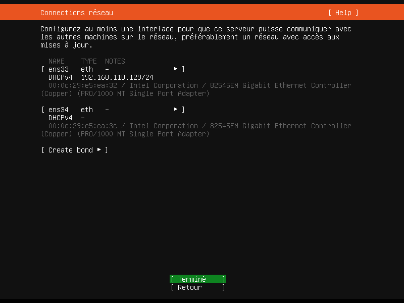
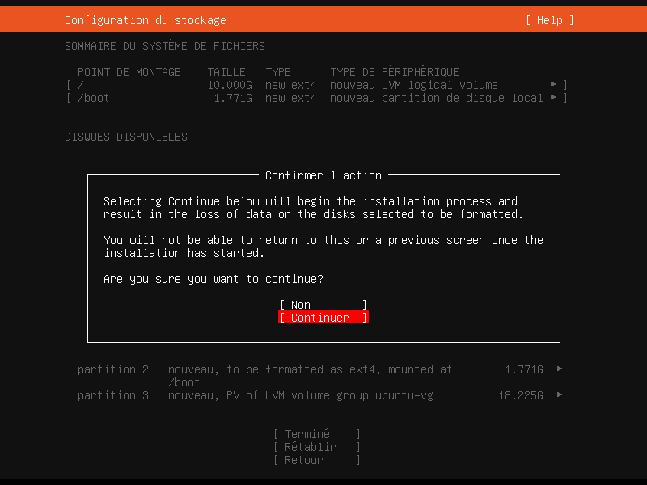
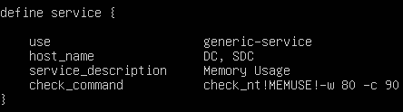

Documentation v2.0.0
Administration Système Linux
Introduction
Nagios est une application permettant la surveillance système et réseau. Elle surveille les hôtes et services spécifiés, alertant lorsque les systèmes ne fonctionnent plus, et quand ils passent en fonctionnement normal.
L'interface web permet d'avoir une vue d'ensemble du système d'information et des possibles anomalies.
Les sondes (appelés "greffons" ou "pluggins") ont une centaine de mini programmes que l'on peut compléter en fonction des besoins de chacun pour superviser chaque ressource disponible sur l'ensemble des ordinateurs ou éléments réseaux du système informatique.
Téléchargement de l'ISO Ubuntu
-
Rendez vous sur ubuntu.com.
-
Dans le menu de navigation, cliquez sur
Downloadpuis surGet Ubuntu Server. -
Cliquez sur
Alternative download >. -
Cliquez sur
Get Ubuntu Server 20.04 LTSpour télécharger l'ISO de Ubuntu.
Création de la machine virtuelle
-
Sur VMware, depuis l'interface principale, cliquez sur
Create a New Virtual Machine: -
Sélectionnez
Typical (recommended)puis cliquez surNext >: -
Sélectionnez
I will install the operating system later.puis cliquez surNext >:
-
Sélectionnez
Linux, et sélectionnez la VersionUbuntu 64-bit,puis cliquez surNext >: -
Saisissez le nom de la machine virtuelle en-dessus de
Virtual machine name:, puis cliquez surNext >: -
Sélectionnez
Split virtual disk into multiple files, puis cliquez surNext >: -
Cliquez sur
Finish:
Paramètrage de la machine virtuelle
-
Cliquez sur
Edit virtual machine settings: -
Cliquez sur
CD/DVD (IDE): -
Sélectionnez
Use ISO image file:, puis cliquez surBrowse...pour rechercher l'ISO d'Ubuntu téléchargé :
-
Cliquez sur
Add...en bas à gauche: -
Sélectionnez
Network Adapter, puis cliquez surFinish:
-
Dans
Network Adapter 2, cliquez surLAN Segments...: -
Cliquez sur
Add, nommez ce nouveau segement :sup3ais, puis cliquez surOKpour valider et fermer la fenêtre : -
Cliquez sur
LAN segments:, puis sélectionnez le nouveau segementsup3ais: -
Cliquez sur
OKpour valider et fermer la fenêtre :
Installation de Ubuntu
-
Cliquez sur
Power on this virtual machine:
-
Sélectionnez
Français(valider avec la touche Entrée de votre clavier):Sélectionner -> croix directionnelle du clavier.Valider -> toucheEntréedu clavier. -
Sélectionnez
Installer Ubuntu Server -
Sélectionnez
Français: -
Sélectionnez
Continuer sans mettre à jour: -
Disposition du clavier ->
French: -
Sélectionnez
Terminé: -
Sélectionnez
Terminé: -
Sélectionnez
Terminé: -
Laissez tout par défaut et sélectionnez
Terminé:
-
Laissez tout par défaut et sélectionnez
Terminé: -
Sélectionnez
Continuer: -
Remplissez le formulaire et sélectionnez
Terminé:Le clavier est en AZERTY par défaut. -
Ne pas installer le serveur OpenSSH. Sélectionnez
Terminé: -
Une fois l'installation terminée, sélectionnez
Redémarrer maintenant: -
Appuyez la touche
Entréede votre clavier pour annuler les installationsmedium. -
Appuyez de nouveau sur la touche
Entréede votre clavier une fois le messageReached target Cloud-init target.apparue. -
nagios login:(votre nom d'utilisateur)password:(votre mot de passe)
L'installation devrait débuter...
Réalisation du TP Nagios Core
-
Passez en mode administrateur à l'aide de la commande
sudo su:nagios@nagios:~$sudo su[sudo] password for nagios:: saisissez votre mot de passe -
Installez le paquet
ifupdownpour configurer les interfaces réseaux :root@nagios:/home/nagios#apt install -y ifupdown -
Vérifiez les noms de vos interfaces réseau à l'aide de la commande
ip a:root@nagios:/home/nagios#ip a -
Modifiez le fichier
interfacessitué dans le répertoireetc/network/à l'aide la commandenano:root@nagios:/home/nagios#nano /etc/network/interfaces/etc/network/interfaces # interfaces(5) file used by ifup(8) and ifdown(8) # Include files from /etc/network/interfaces.d: source-directory /etc/network/interfaces.d auto lo iface lo inet loopback auto ens33 iface ens33 inet dhcp auto ensXX # ip a -> ensXX iface ensXX inet static address 172.20.0.30/24Enregistrez la modification avecctrl x->Y->EntréeAttention ! Les interfaces présentes sur la capture d'écran peuvent être différentes de votre côté. -
Redémarrez le service réseaux à l'aide de la commande
restart:root@nagios:/home/nagios#service networking restartSi vous avez une erreur de type..
-
Vider le fichier de log du system à l'aide de la commande
echo >:root@nagios:/home/nagios#echo > /var/log/syslog -
Ouvrez le fichier de log pour voir si il est bien vide, à l'aide de la commande
nano:root@nagios:/home/nagios#nano /var/log/syslog -
Resaissisez la commande
service networking restart:root@nagios:/home/nagios#service networking restart -
Ouvrez le fichier de log à l'aide de la commande
nanoet essayez de trouver où est l'erreur à l'aide des flèches directionnelles de votre clavier :root@nagios:/home/nagios#nano /var/log/syslog
-
-
Changez le nom de la machine dans le fichier
hostnamesitué dans le répertoire/etc/:Nouveau nom:
nagiosroot@nagios:/home/nagios#nano /etc/hostnameEnregistrez la modification avecctrl x->Y->Entrée -
Modifiez le fichier
hostssitué dans le répertoire/etc/:root@nagios:/home/nagios#nano /etc/hostsEnregistrez la modification avecctrl x->Y->Entrée -
Vérifiez les adresses IP des deux cartes réseau à l'aide de la commande
ip a:root@nagios:/home/nagios#ip aSuccess!
L'interfaceens33possède bien une adresse IP dynamique. L'interfaceens34possède bien une adresse IP static172.20.0.30/24. -
Pinguez l'adresse
1.1.1.1à l'aide de la commandepingpour vérifier la passerelle par défaut :root@nagios:/home/nagios#ping 1.1.1.1
Success!
-
Pinguez l'url
google.frà l'aide de la commandepingpour vérifier le DNS de la machine :root@nagios:/home/nagios#ping google.frSuccess!
-
Installez les packages suivants :
autoconf,gcc,libc6,make,wget,unzip,apache2,php,libapache2-mod-php,lidgd-devetlibssl-devà l'aide de la commandeapt install:root@nagios:/home/nagios#apt update && apt upgrade -yroot@nagios:/home/nagios#apt install -y autoconf gcc libc6 make wget unzip apache2 php libapache2-mod-php libgd-dev libssl-devVérification
Vérifiez que tout est bien installé à l'aide de la commandedpkg --listSortir avec la commandectrl c -
Accédez au dossier
tmpà l'aide de la commandecd:root@nagios:/home/nagios#cd /tmp -
Téléchargez nagiosCore depuis GitHub à l'aide de la commande
wget:root@nagios:/tmp#wget -O nagioscore.tar.gz https://github.com/NagiosEnterprises/nagioscore/archive/nagios-4.4.8.tar.gzÀ quoi sert le
-Odans la commande ?-Opermet d'enregistrer tous les messages de la commandewgetdans un fichier. -
Décompressez l'archive téléchargé à l'aide de la commande
tar:root@nagios:/tmp#tar xvzf nagioscore.tar.gz -
Accédez au dossier
nagioscore-nagios-4.4.8à l'aide de la commandecd:root@nagios:/tmp#cd nagioscore-nagios-4.4.8/ -
??? :
root@nagios:/tmp/nagioscore-nagios-4.4.8#./configure --with-httpd-conf=/etc/apache2/sites-enabled -
Créez tous les fichiers par défaut :
root@nagios:/tmp/nagioscore-nagios-4.4.8#make all -
??? :
root@nagios:/tmp/nagioscore-nagios-4.4.8#make install-groups-users -
Assignez l'utilisateur
www-dataau groupenagiosà l'aide de la commandeusermod:root@nagios:/tmp/nagioscore-nagios-4.4.8#usermod -a -G nagios www-dataSyntaxe :
usermod -a -g [groupe] [utilisateur]usermodpermet de modifier des comptes utilisateurs.-apermet d'assigner.-Gpermet de désigner un groupe.nagiosest un groupe.www-dataest un compte utilisateur. -
Installez les fichiers binaires, les CGI et les fichiers HTML à l'aide de la commande
make install:root@nagios:/tmp/nagioscore-nagios-4.4.8#make install -
Installez le Service / Daemon à l'aide de la commande
make install:Cela installera les fichiers de service ou de démon et les configurera également pour le démarrage automtique.
root@nagios:/tmp/nagioscore-nagios-4.4.8#make install-daemoninit -
Installez le mode "commande" à l'aide de la commande
make install:Cela installera et configurera le fichier de commande externe.
root@nagios:/tmp/nagioscore-nagios-4.4.8#make install-commandmode
-
Installez les fichiers de configurations à l'aide de la commande
make install:Cela installera les fichiers de configurations *SAMPLE*. Celles-ci sont nécessaire car Nagios a besoin de quelques fichiers de configuration pour lui permettre de démarrer.
root@nagios:/tmp/nagioscore-nagios-4.4.8#make install-config -
Installez les fichiers de configurations d'apache à l'aide de la commande
make install:root@nagios:/tmp/nagioscore-nagios-4.4.8#make install-webconfroot@nagios:/tmp/nagioscore-nagios-4.4.8#a2enmod rewriteroot@nagios:/tmp/nagioscore-nagios-4.4.8#systemctl restart apache2root@nagios:/tmp/nagioscore-nagios-4.4.8#a2enmod rewriteroot@nagios:/tmp/nagioscore-nagios-4.4.8#a2enmod cgiroot@nagios:/tmp/nagioscore-nagios-4.4.8#systemctl restart apache2root@nagios:/tmp/nagioscore-nagios-4.4.8#a2enmod cgi -
Configurez le Firewall à l'aide de la commande
ufw:Vous devez autoriser le trafic entrant du port 80 sur le pare-feu local pour pouvoir accéder à l'interface Web de Nagios Core.
root@nagios:/tmp/nagioscore-nagios-4.4.8#ufw allow Apacheroot@nagios:/tmp/nagioscore-nagios-4.4.8#ufw reload -
Créez l'utilisateur
nagiosadminà l'aide de la commandehtpasswd:Vous devez créer un compte utilisateur Apache pour pouvoir vous connecter à Nagios.
La commande suivante créera un compte utilisateur appelé
nagiosadminet vous serez invité à fournir un mot de passe pour le compteroot@nagios:/tmp/nagioscore-nagios-4.4.8#htpasswd -c /usr/local/nagios/etc/htpasswd.users nagiosadmin -
Redémarrez le service d'
apache2à l'aide de la commanderestartet vérifier son statut à l'aide de la commandestatus:root@nagios:/tmp/nagioscore-nagios-4.4.8#systemctl restart apache2.serviceroot@nagios:/tmp/nagioscore-nagios-4.4.8#systemctl status apache2.service -
Démarrez le service
Nagiosà l'aide de la commandestartet vérifier son statut à l'aide de la commandestatus:root@nagios:/tmp/nagioscore-nagios-4.4.8#systemctl start nagios.serviceroot@nagios:/tmp/nagioscore-nagios-4.4.8#systemctl status nagios.serviceSortir avec la commandectrl c -
Vérifiez les adresses IP de vos interfaces réseau à l'aide de la commande
ip a:root@nagios:/tmp/nagioscore-nagios-4.4.8#ip a -
Testez Nagios dans un navigateur internet avec l'url suivante :
http://IPens33/nagios:Vous serez invité à entrez un nom d'utilisateur et un mot de passe.
Nom d'utilisateur: nagiosadminMot de passe: (mot de passe défini)Vous devriez arriver sur cette page :
clear.
Attention !
Toute(s) manipulation(s) effectuée(s) dans le dossiertmpseront automatiquement effacée(s) lors d'un redémarrage de la machine virtuelle ou son extinction.
Afin d'eviter ce problème et de tout conserver, il est (fortement) recommandé de copier tout(e) archive/dossier dans le dossier/répertoire/home/nagios

{kind=link}
{kind=link}
{kind=link}
{kind=link}
{kind=link}
{kind=link}
{kind=link}
{kind=link}
{kind=link}
{kind=link}
{kind=link}
Cela a crée un utilisateur et un groupe nomménagios. L'utilisateurwww-data(correspondant à apache) est également ajouté au groupenagios.
{kind=link}
{kind=link}
{kind=link}
{kind=link}
Installation des plugins Nagios
-
Installez les packages suivants :
libmcrypt-dev,libssl-dev,bc,build-essential,snmp,libnet-snmp-perletgettextà l'aide de la commandeapt install:root@nagios:/tmp/nagioscore-nagios-4.4.8#apt install -y libmcrypt-dev libssl-dev bc gawk dc build-essential snmp libnet-snmp-perl gettextVérification
Vérifiez que tout est bien installé à l'aide de la commandedpkg --list -
Accédez au dossier
tmpà l'aide de la commandecd:root@nagios:/tmp/nagioscore-nagios-4.4.8#cd /tmp -
Téléchargez les plugins nagiosCore depuis GitHub à l'aide de la commande
wget:root@nagios:/tmp#wget --no-check-certificate -O nagios-plugins.tar.gz https://github.com/nagios-plugins/nagios-plugins/archive/release-2.2.1.tar.gz -
Décompressez l'archive téléchargé à l'aide de la commande
tar:root@nagios:/tmp#tar xvzf nagios-plugins.tar.gz
-
Accédez au dossier
nagios-plugins-release-2.2.1à l'aide de la commandecd:root@nagios:/tmp#cd nagios-plugins-release-2.2.1/ -
??? :
root@nagios:/tmp/nagios-plugins-release-2.2.1#./tools/setuproot@nagios:/tmp/nagios-plugins-release-2.2.1#./configureroot@nagios:/tmp/nagios-plugins-release-2.2.1#makeroot@nagios:/tmp/nagios-plugins-release-2.2.1#make install -
Activez la supervision des machines et autres métériels réseaux :
Editez le fichier
nagios.cfgsitué dans le répertoire/usr/local/nagios/etc/root@nagios:/tmp/nagios-plugins-release-2.2.1#nano -c /usr/local/nagios/etc/nagios.cfgAfin de superviser les machines Windows, enlevez le
#à la ligne 38 ->cfg_file=/usr/local/nagios/etc/objects/windows.cfg.Afin de superviser les machines Switchs et Routeurs, enlevez le
#à la ligne 41 ->cfg_file=/usr/local/nagios/etc/objects/switch.cfg.Afin de superviser les machines Imprimantes, enlevez le
#à la ligne 44 ->cfg_file=/usr/local/nagios/etc/objects/printer.cfg.Enregistrez la modification avecctrl x->Y->Entrée -
Editez le fichier
windows.cfgse trouvant dans le répertoire/usr/local/nagios/etc/objects/à l'aide de la commandenanoafin d'ajouter et superviser des ordinateurs Windows :root@nagios:/tmp/nagios-plugins-release-2.2.1#nano -c /usr/local/nagios/etc/objects/windows.cfgDans la section
HOST DEFINITIONS, allez à la ligne 21, dans la boucledefine host:-
use: windows-server -
host_name: DC -
alias: AD-DS -
address: 172.20.0.10
Ne pas modifier la syntaxe des boucles (ex : saut de ligne)Juste après la boucle, ajoutez une nouvelle boucle
define hostavec les paramètres suivant :-
use: windows-server -
host_name: SDC -
alias: My secondary Windows Server -
address: 172.20.0.11
Important : changez le
host_namedes différents services (dans les blocsdefine serviceun peu plus bas dans le fichier) en supprimantwinserveret en ajoutant les noms de chaque serveurs (DCetSDC)Pour faire simple, descendez un peu jusqu'à la section
SERVICE DEFINITIONSDans les boucles
define service, remplacezwinserverparDC, SDCpour lehost_nameIl y a 8 boucles en tout :
Ligne 65
Ligne 78
Ligne 91
Ligne 104
Ligne 117
Ligne 130
Ligne 143
 Enregistrez les modifications avec
Enregistrez les modifications avecctrl x->Y->Entrée -
-
Redémarrez le service
nagiosà l'aide de la commanderestart:root@nagios:/tmp/nagios-plugins-release-2.2.1#service nagios restart -
Vérifiez l'ajout des machines dans le menu
hostsetmapde l'interface Web de NagiosRedémarrez le service
nagiosà l'aide de la commanderestart:root@nagios:/tmp/nagios-plugins-release-2.2.1#service nagios restartSuccess!
On peut voir que les deux machinesDCetSDCont bien été créer. -
Editez le fichier
localhost.cfgse trouvant dans le répertoire/usr/local/nagios/etc/objects/à l'aide de la commandenanoafin d'ajouter et superviser des Serveurs Linux :root@nagios:/tmp/nagios-plugins-release-2.2.1#nano -c /usr/local/nagios/etc/objects/localhost.cfgDans la section
HOST DEFINITIONS, allez à la ligne 21, dans la boucledefine host:-
use: linux-server -
host_name: Nagios -
alias: Serveur de supervision -
address: 172.20.0.31
Ne pas modifier la syntaxe des boucles (ex : saut de ligne)Juste après la boucle, ajoutez une nouvelle boucle
define hostavec les paramètres suivant :-
use: linux-server -
host_name: Zimbra -
alias: Serveur de messagerie -
address: 172.20.0.15
Descendez un peu. Dans la section
HOST GROUP DEFINITION, allez à la ligne 47, dans la boucledefine hostgroup:-
hostgroup_name: linux-server -
alias: Linux Servers -
members: Nagios, Zimbra
Redescendez encore un peu. Dans la section
SERVICE DEFINITIONS, allez à la ligne 64, dans la boucledefine service:host_name-> Nagios, ZimbraChangez le
host_namepour chaque boucledefine service:Il y a 8 boucles en tout :
Ligne 64
Ligne 78
Ligne 92
Ligne 106
Ligne 118
Ligne 131
Ligne 144
Ligne 158
 Enregistrez les modifications avec
Enregistrez les modifications avecctrl x->Y->Entrée -
-
Installez les paquets
sendmail,mailutils,ssmtpà l'aide de la commandeapt install:rroot@nagios:/tmp/nagios-plugins-release-2.2.1#apt update && apt upgrade -yroot@nagios:/tmp/nagios-plugins-release-2.2.1#apt install -y sendmailroot@nagios:/tmp/nagios-plugins-release-2.2.1#apt install -y mailutilsroot@nagios:/tmp/nagios-plugins-release-2.2.1#apt install -y ssmtpVérification
Vérifiez que tout est bien installé à l'aide de la commandedpkg --listSortir avec la commandectrl c -
Configurez le SSMTP en modifiant le fichier
ssmtp.confsitué dans le répertoire/etc/ssmtp/à l'aide de la commandenano:Rajoutez la ligne
root:adminNagios@sub3ais.lanroot@nagios:/tmp/nagios-plugins-release-2.2.1#nano -c /etc/ssmtp/ssmtp.confEnregistrez la modification avecctrl x->Y->Entrée -
Configurez l'adresse de messagerie du compte
rootdans le fichierrevaliasessitué dans le répertoire/etc/ssmtp/à l'aide de la commandenano:Rajoutez la ligne
root:adminNagios@sub3ais.lanroot@nagios:/tmp/nagios-plugins-release-2.2.1#nano -c /etc/ssmtp/revaliasesEnregistrez la modification avecctrl x->Y->Entrée -
Modifier le fchier
resolv.confsitué dans le répertoire/etc/à l'aide de la commandenano:nameserver->172.20.0.10nameserver->1.1.1.1search->sup3ais.lanroot@nagios:/tmp/nagios-plugins-release-2.2.1#nano -c /etc/resolv.confEnregistrez la modification avecctrl x->Y->Entrée -
Testez la résolution de nom depuis nagios à l'aide de la commande
nslookup:root@nagios:/tmp/nagios-plugins-release-2.2.1#nslookup mail.sup3ais.lan -
Redémarrez le service
nagiosà l'aide de la commanderestart:root@nagios:/tmp/nagios-plugins-release-2.2.1#service nagios restart -
Testez l'envoi d'un mail à l'aide de la commande
echo:Ne marche pasroot@nagios:/tmp/nagios-plugins-release-2.2.1#echo "Contenu du mail" | mail -s "Sujet du mail" admin@sup3ais.lanou
root@nagios:/tmp/nagios-plugins-release-2.2.1#echo "Contenu du mail" | mail -s "Sujet du mail" email.perso@companie.domaine
-
Modifiez le fichier
contact.cfgsitué dans le répertoire/usr/local/nagios/etc/objects/à l'aide de la commandenano:Dans la section
CONTACTS, dans la boucledefine contact:contact_name: nagiosadminuse: generic-contactalias: Admin Alerte Nagiosemail: admin@sup3ais.lanservice_notification_period: 24x7service_notification_options: w,u,c,r,f,sservice_notification_commands: notify-service-by-emailhost_notification_period: 24x7host_notification_options: d,u,r,f,shost_notification_commands: notify-host-by-emailroot@nagios:/tmp/nagios-plugins-release-2.2.1#nano /usr/local/nagios/etc/objects/contact.cfgEnregistrez la modification avecctrl x->Y->Entrée -
Redémarrez le service
nagiosà l'aide de la commanderestart:root@nagios:/tmp/nagios-plugins-release-2.2.1#service nagios restart -
Autorisez l'envoi de notification à l'aide de la commande
chown -R:root@nagios:/tmp/nagios-plugins-release-2.2.1#chown -R nagios:www-data /usr/local/nagios/var/rw -
Allez dans le dossier
objectssitué dans le chemin/usr/local/nagios/etc/:root@nagios:/tmp#cd /usr/local/nagios/etc/objects -
Modifiez les fichiers
windows.cfg,localhost.cfg,switch.cfgettemplates.cfg:Dans chaque boucle
define hostetdefine servicede ces trois fichiers, rajouez ces deux paramètres :contact_groups: adminscontacts: nagiosadminroot@nagios:/usr/local/nagios/etc/objects#nano windows.cfg Enregistrez les modifications avec
Enregistrez les modifications avecctrl x->Y->Entréeroot@nagios:/usr/local/nagios/etc/objects#nano localhost.cfg Enregistrez les modifications avec
Enregistrez les modifications avecctrl x->Y->Entréeroot@nagios:/usr/local/nagios/etc/objects#nano switch.cfgEnregistrez les modifications avecctrl x->Y->Entréeroot@nagios:/usr/local/nagios/etc/objects#nano templates.cfgEnregistrez les modifications avecctrl x->Y->Entrée -
Modifiez le fichier
commands.cfgà l'aide de la commandenano:Allez à la ligne
29et37, et modifiez pour que/usr/bin/mailsoit présent (compléter uniquement par/usr)root@nagios:/usr/local/nagios/etc/objects#nano commands.cfg Enregistrez les modifications avec
Enregistrez les modifications avecctrl x->Y->Entrée -
Redémarrez le service
nagiosà l'aide de la commanderestart:root@nagios:/usr/local/nagios/etc/objects#service nagios restart -
Mettez à jour les dépots à l'aide de la commande
apt:root@nagios:/usr/local/nagios/etc/objects#apt update && apt upgrade -
Allez voir le fichier de dépôts
sources.listpour vérifier qu'il contient bien les lignesdebetdeb-src:root@nagios:/usr/local/nagios/etc/objects#nano /etc/apt/sources.listSortez du fichier grâce à la commandectrl x -
Vérifiez la réception de notifications :
Sauvegarde du dossiernagioscore-nagios-4.4.8
cp -R nagioscore-nagios-4.4.8 /home/nagios
{kind=link}
{kind=link}
{kind=link}
{kind=link}
{kind=link}
{kind=link}
{kind=link}
{kind=link}
{kind=link}
{kind=link}
Attention : La machineNagiosdoit pouvoir résoudre le nommail.sup3ais.lan.
Sauvegarde du dossiernagios-plugins-release-2.2.1
cd /tmp
cp -R nagios-plugins-release-2.2.1 /home/nagios
{kind=link}
{kind=link}